Gradient boosting performs gradient descent
Terence Parr and Jeremy Howard
Please send comments, suggestions, or fixes to Terence.
So far we've looked at GBMs that use two different direction vectors, the residual vector (Gradient boosting: Distance to target) and the sign vector (Gradient boosting: Heading in the right direction). It's natural to ask whether there are other direction vectors we can use and what effect they have on the final  predictions. Your intuition probably told you that nudging the intermediate
predictions. Your intuition probably told you that nudging the intermediate  prediction towards target
prediction towards target  gradually improves model performance, but would ever stop if we kept increasing M? If so, where would it stop? Is there something special or interesting about the sequence of vectors that passes through? Moreover, we know that training a model on observations (
gradually improves model performance, but would ever stop if we kept increasing M? If so, where would it stop? Is there something special or interesting about the sequence of vectors that passes through? Moreover, we know that training a model on observations ( , y) is a matter of finding a function, , that optimizes some cost or loss function indicating how well F performs. (The procedure is to tweak model F's model parameters until we minimize the loss function.) What loss function then is a GBM optimizing and what is the relationship with the choice of direction vector?
, y) is a matter of finding a function, , that optimizes some cost or loss function indicating how well F performs. (The procedure is to tweak model F's model parameters until we minimize the loss function.) What loss function then is a GBM optimizing and what is the relationship with the choice of direction vector?
To answer these questions, we're going to employ a mathematician's favorite trick: showing how our current problem is just a flavor of another well-known problem for which we have lots of useful results. Specifically, this article shows how gradient boosting machines perform an optimization technique from numerical methods called gradient or steepest descent. We'll see that a GBM training weak leaners on residual vectors optimizes the mean squared error (MSE), the  loss, between the true target and the intermediate predictions,
loss, between the true target and the intermediate predictions,  for observation matrix 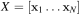. A GBM that trains weak learners on sign vectors optimizes the mean absolute error (MAE), the
for observation matrix 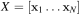. A GBM that trains weak learners on sign vectors optimizes the mean absolute error (MAE), the  loss.
loss.
To help make the connection between gradient boosting and gradient descent, let's take a small detour to reinvent the technique of gradient descent used to optimize functions. Once we've got a good handle on both ideas, we'll see how similar they are mathematically.
The intuition behind gradient descent
Both of us (Terence and Jeremy) have a story where we had to make our way down a mountain in the pitch black of night or dense fog. (Spoiler alert: we both made it back!) Obviously, the way to get down is to keep going downhill until you reach the bottom, taking steps to the left, right, forward, backward or at an angle in order to minimize the “elevation function.” Rather than trying to find the best angle to step, we can treat each direction, forward/backward and left/right, separately and then combine them to obtain the best step direction. The procedure is to swing your foot forwards and backwards to figure out which way is downhill on, say, the North/South axis, then swing your foot left and right to figure out which way is downhill on the East/West axis (Boot clipart from http://etc.usf.edu/clipart/):

We're looking for a direction vector with components for each of the x and y axes that takes us downhill, according to some elevation function, 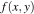. We can represent the components of the downhill direction vector as a sign vector, such as
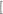which way is down in x direction, which way is down in y direction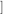 = 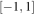
which would indicate a step to the left and forward. To actually move downhill, all we have to do is add the direction vector to the current position to get the new position:  .
.
The sign vector works well but does not take into consideration the steepness of the slope in each axis. If the slope is gradual to the left (x) but steep to the front (y), we might prefer a direction vector of 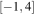. The idea is to take big steps along an axis when the slope is steep but small steps when the slope is shallow. As we approach the bottom of the mountain, we should take really small steps to avoid overshooting and going back up the other side. Updating the current position with a direction vector containing magnitude information, proportional to the slope, automatically takes smaller steps as the slope flattens out.
Mathematically, we don't move our foot around to learn about the slope of , we compute the direction vector from the partial derivatives of with respect to the x and y dimensions. Such derivatives use notation  and 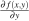. If we stack those partial derivatives into a vector, it's called a gradient and is written:
and 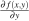. If we stack those partial derivatives into a vector, it's called a gradient and is written:
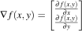
The gradient is is actually the opposite or negative of the direction vector we want because the slope always points in the uphill direction. This is easiest to see in two dimensions:

For a small change change in x to the right, 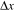, the function value 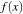 will go up if the slope is positive or go down if the slope is negative. Here, 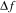 is negative for 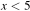 and positive for 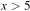. Consequently, to move downhill, not uphill, we update the current position by adding in the negative of the gradient.
Let's generalize our position update equation to handle more than two dimensions. Rather than x and y, let's use (in bold) to represent all of the function parameters, which means our “elevation” function to optimize now takes a vector argument, 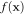. As we update , we want the value of to decrease. When it stops decreasing, will have arrived at the position giving the minimum value of . Because we'll need this to show the relationship between gradient boosting and gradient descent, let's formally give the update equation. The next position of , at time step t, is given by:
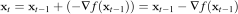
In practice, we need to restrict the size of the steps we take from 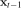 to 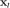 by shrinking the direction vector using a learning rate,  , whose value is less than 1. (Imagine a function that is only valid between, say, -2 and 2 but whose output values range from 0 to 1,000; direction vectors derived from the slope would force overly large steps and so we attenuate the steps with the learning rate.) This brings us to the position update equation found in most literature:
, whose value is less than 1. (Imagine a function that is only valid between, say, -2 and 2 but whose output values range from 0 to 1,000; direction vectors derived from the slope would force overly large steps and so we attenuate the steps with the learning rate.) This brings us to the position update equation found in most literature:
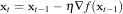
The key takeaways from this gradient descent discussion are:
- Minimizing a function, , means finding the position where has minimal value.
- The procedure is to pick some initial (random or best guess) position for and then gradually nudge in the downhill direction, which is the direction where the value is smaller.
- The gradient of gives us the direction of uphill and so we negate the gradient to get the downhill direction vector.
- We update position to , where the function is lower, by adding the direction vector to , scaled by the learning rate, .
Ok, we're finally ready to show how gradient boosting is doing a particular kind of gradient descent.
Boosting as gradient descent in prediction space
Our goal is to show that training a GBM is performing gradient-descent minimization on some loss function between our true target, , and our approximation, . That means showing that adding weak models,  , to our GBM additive model:
, to our GBM additive model:
is performing gradient descent in some way. It makes sense that nudging our approximation, , closer and closer to the true target would be performing gradient descent. For example, at each step, the residual 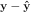 gets smaller. We must be minimizing some function related to the distance between the true target and our approximation. Let's revisit our golfer analogy and visualize the squared error between the approximation and the true value, 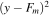:

Since 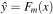, let's think about the ball as  and the golfer nudging towards target y. At each step, we have to figure out which direction to go. At
and the golfer nudging towards target y. At each step, we have to figure out which direction to go. At  and 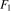, we should move to the right; at 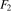, we should move to the left. How far should we move ? We could move by +1 and -1, the sign of the direction, or we could take into consideration the distance of to the target y,
and 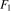, we should move to the right; at 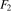, we should move to the left. How far should we move ? We could move by +1 and -1, the sign of the direction, or we could take into consideration the distance of to the target y,  . That distance just happens to be in the opposite (negative) direction of the slope of the MSE loss function, 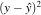. (Recall that the derivative is positive in the uphill direction and so taking the negative gives the direction of downhill or lower cost.) So, at least in this single-observation case, adding the residual to is subtracting the slope, which is exactly what gradient descent does.
. That distance just happens to be in the opposite (negative) direction of the slope of the MSE loss function, 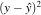. (Recall that the derivative is positive in the uphill direction and so taking the negative gives the direction of downhill or lower cost.) So, at least in this single-observation case, adding the residual to is subtracting the slope, which is exactly what gradient descent does.
The key insight
The key to unlocking the relationship for more than one observation is to see that the residual, , is a direction vector. It's not just the magnitude of the difference. Moreover, the vector points in the direction of a better approximation and, hence, a smaller loss between the true
and
vectors. That suggests that the direction vector is also (the negative of) a loss function gradient.
Chasing the direction vector in a GBM is chasing the (negative) gradient of a loss function via gradient descent.
In the next two sections, we'll show that the gradient of the MSE loss function is the residual direction vector and the gradient of the MAE loss function is the sign direction vector. Then, we can put it all together to show GBM is mathematically performing a gradient descent on the loss function.
The MSE function gradient
To uncover the loss function optimized by a GBM whose weak models are trained on the residual vector, we just have to integrate the residual . It's actually easier, though, to go the other direction and compute the gradient of the MSE loss function to show that it is the residual vector. The MSE loss function computed from N observations in matrix is:
but let's substitute for the model output, , to make the equation more clear:
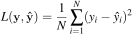
Also, since N is a constant once we start boosting, and and 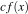 have the same x minimum point, let's drop the 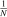 constant:
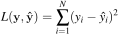
Now, let's take the partial derivative of the loss function with respect to a specific 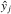 approximation:
(We can remove the summation because the partial derivative of L for 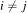 is 0.)
That means the gradient with respect to is:
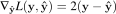
Dropping the constant in front again leaves us with the gradient being the same as the residual vector: . So, chasing the residual vector in a GBM is chasing the gradient vector of the MSE loss function while performing gradient descent.
The MAE function gradient
Let's see what happens with the MAE loss function:
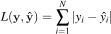
The partial derivative with respect to a specific approximation is:
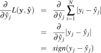
giving gradient:
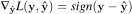
This shows that chasing the sign vector in a GBM is chasing the gradient vector of the MAE loss function while performing gradient descent.
Morphing GBM into gradient descent
Now that we have all of the pieces, let's prove the general result that a GBM is performing gradient descent on a loss function that compares the target to the model's previous approximation,  , to get the new approximation,
, to get the new approximation,  . To do this, we'll morph the GBM additive model recurrence relation into the gradient descent position update equation. Let's start by simplifying the GBM recurrence relation:
. To do this, we'll morph the GBM additive model recurrence relation into the gradient descent position update equation. Let's start by simplifying the GBM recurrence relation:
by substituting the 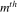 approximation variable as to get:
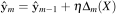
Since is trained on and is an approximation to the direction vector, which is a function of , such as residual vector  , let's replace the weak model prediction with the target data it's trained on. We haven't given the direction vector a symbol yet, so for the purposes of this proof, let's refer to the direction vector as 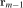 because it is derived from . (Friedman calls the pseudo-response and uses symbol
, let's replace the weak model prediction with the target data it's trained on. We haven't given the direction vector a symbol yet, so for the purposes of this proof, let's refer to the direction vector as 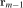 because it is derived from . (Friedman calls the pseudo-response and uses symbol  , but we avoid because it resembles our use of too much.) Our equation now looks much simpler:
, but we avoid because it resembles our use of too much.) Our equation now looks much simpler:
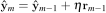
Next, we can flip the addition to a subtraction by subtracting the negative:
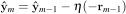
and there's nothing wrong with changing the iteration variable from m to t:
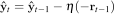
Now, compare that to the gradient descent position update equation:
Those equations are identical if we choose direction vector 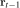 to be 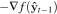 for some f, which means a GBM would be performing gradient descent using the gradient of f. Let f be the general loss function 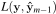 and we have discovered what direction vector to train our weak models on:
So, adding another weak model to a GBM is actually adding the negative of the gradient of a loss function to get the next approximation:
| Gradient descent | Gradient boosting |
| 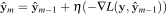 |
When L is the MSE loss function, L's gradient is the residual vector and a gradient descent optimizer should chase that residual, which is exactly what the gradient boosting machine does as well. When L is the MAE loss function, L's gradient is the sign vector, leading gradient descent and gradient boosting to step using the sign vector.
The implications of all of this fancy footwork is that we can use a GBM to optimize any differentiable loss function by training our weak models on the negative of the loss function gradient (with respect to the previous approximation). Understanding this derivation from the GBM recurrence relation to gradient descent update equation is much harder to see without the substitution, as we'll see next.
Function space is prediction space
Most GBM articles follow Friedman's notation (on page 4, equation for 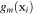) and describe the gradient as this scary-looking expression for the partial derivative with respect to our approximation of yi for observation  :
:
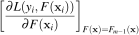
Hmm... let's see if we can tease this apart. First, evaluate the expression according to the subscript,  :
:
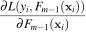
Next, let's remove the i index variable to look at the entire gradient, instead of a specific observation's partial derivative:
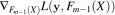
But, what does it mean to take the partial derivative with respect to a function, ? Here is where we find it much easier to understand the gradient expression using  , rather than . Both are just vectors, but it's easier to see that when we use a simple variable name, . Substituting, we get a gradient expression that references two vector variables and :
, rather than . Both are just vectors, but it's easier to see that when we use a simple variable name, . Substituting, we get a gradient expression that references two vector variables and :
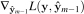
Variable is a position in “function space,” which just means a vector result of evaluating function . This is why GBMs perform “gradient descent in function space,” but it's easier to think of it as “gradient descent in prediction space” where is our prediction.
How gradient boosting differs from gradient descent
Before finishing up, it's worth examining the differences between gradient descent and gradient boosting. To make things more concrete, let's consider applying gradient descent to train a neural network (NN). Training seeks to find the weights and biases, model parameters , that optimize the loss between the desired NN output, , and the current output, . If we assume a squared error loss function, NN gradient descent training computes the next set of parameters by adding the residual vector, , to the current (subtracting the squared error gradient).
In contrast, GBMs are meta-models consisting of multiple weak models whose output is added together to get an overall prediction. The optimization we're concerned with here occurs, not on the parameters of the weak models themselves but, instead, on the composite model prediction, . GBM training occurs on two levels then, one to train the weak models and one on the overall composite model. It is the overall training of the composite model that performs gradient descent by adding the residual vector (assuming a squared error loss function) to get the improved model prediction. Training a NN using gradient descent tweaks model parameters whereas training a GBM tweaks (boosts) the model output.
Also, training a NN with gradient descent directly adds a direction vector to the current , whereas training a GBM adds a weak model's approximation of the direction vector to the current output, . Consequently, it's likely that a GBM's MSE and MAE will decrease monotonically during training but, given the weak approximations of our , monotonicity is not guaranteed. The GBM loss function could bounce around a bit on its way down.
One final note on training regression trees used for weak models. The interesting thing is that, regardless of the direction vector (negative gradient), regression trees can always get away with using the squared error to compute node split points; i.e., even when the overall GBM is minimizing the absolute error. The difference between optimizing MSE and MAE error for the GBM is that the weak models train on different direction vectors. How the regression trees compute splits is not a big issue since the stumps are really weak and give really noisy approximations anyway.
Summary
This 3-part article exploded in size beyond our initial expectations, but hopefully it will provide the necessary pieces to explain how gradient boosting machines work in detail. There's a lot of math in this last chunk, but we can summarize it as follows. Every time we add a new weak model to a GBM, we hope to nudge our prediction, , towards the target, . Prediction will take smaller and smaller steps to eventually converge on (modulo noise generated by imperfect weak models, ). We say that prediction sweeps through function space because it is the result of some function evaluation. It's easier to think of this as sweeping through prediction space.
The nudges that we take are the residual or the sign vector between the true target and our approximation (for the common loss functions). We've shown these to be optimizing MSE and MAE, respectively, because the residual is the negative of the MSE gradient and the sign vector is the negative of the MAE gradient. Chasing the direction vector is, therefore, performing a gradient descent that optimizes the loss function.
We can use any differentiable loss function we want with GBMs, per the general algorithm in the next section, by using a direction vector that is the negative of the loss function's gradient. If we're satisfied with optimizing MSE or MAE, then all of the math in this last part of the 3-part article is unnecessary. We only need the math to show how to use any loss function we want. For the most part, GBM implementations will use the GBM algorithm to minimize L2 loss or GBM algorithm to minimize L1 loss.
General algorithm with regression tree weak models
This general algorithm, derived from Friedman's Gradient_Boost on page 5, assumes the use of regression trees and is more complex than the specific algorithms for and loss. We need to compute the gradient of the loss function, instead of just using the residual or sign of the residual, and we need to compute weights for regression tree leaves. Each leaf, l, has weight value, w, that minimizes the 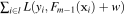 for all observations within that leaf.
To see how this algorithm reduces to that for the loss function we have two steps to do. First, let , whose gradient gives the residual vector . Second, show that leaf weight, w, is the mean of the residual of the observations in each leaf becase the mean minimizes . That means minimizing:
To find the minimal value of the function with respect to w, we take the partial derivative of that function with respect to w and set to zero; then we solve for w. Here is the partial derivative:
And since , the last term drops off:
Now, set to 0 and solve for w:
We can drop the constant by dividing both sides by 2:
Then, pull out the w term:
and move to the other side of the equation:
We can simplify the w summation to a multiplication:
Let's also flip the order of the elements within the summation to get the target variable first:
Divide both sides of the equation by the number of observations in the leaf:
Finally, we see that leaf weights, w, should be the mean when the loss function is the mean squared error:
The mean is exactly what the leaves of the regression tree, trained on residuals, will predict.


![\setlength{\algomargin}{3pt}
\SetAlCapSkip{-10pt}
\SetKwInput{kwReturns}{returns}
\begin{algorithm}[H]
\LinesNumbered
\SetAlgorithmName{Algorithm}{List of Algorithms}
\SetAlgoSkip{}
\SetInd{.5em}{.5em}
\TitleOfAlgo{{\em boost}($X$,$\vec y$,$M$,$\eta$) \kwReturns{model $F_M$}}
Let $F_0(X)$ be value $v$ minimizing $\sum_{i=1}^N L(y_i, v)$, loss across all obs.\\
\For{$m$ = 1 \KwTo $M$}{
Let $\vec r_{m-1} = \nabla_{\hat{\vec y}_{m-1}} L(\vec y,~ \hat{\vec y}_{m-1})$ where $\hat{\vec y}_{m-1} = F_{m-1}(X)$\\
Train regression tree $\Delta_m$ on $\vec r_{m-1}$, minimizing squared error\\
\ForEach{leaf $l \in \Delta_m$}{
Let $w$ be value minimizing $\sum_{i \in l} L(y_i, F_{m-1}(\vec x_i) + w)$ for obs. in leaf $l$\\
Alter $l$ to predict $w$; i.e., (not the usual mean or median)\\
}
$F_m(X) = F_{m-1}(X) + \eta \Delta_m(X)$\\
}
\Return{$F_M$}\\
\end{algorithm}](images/latex-CB3574D4B05979222377D8458B38FCF4.svg)